Detecting Fake reviews on Amazon
This is a list of different projects I worked as part of the graduate course CS 6476 Computer Vision.
Project 1 - Image filtering using convolution:
This project explored different filters that can be used to manipulate color frequencies of an image like blur, sobel, Discrete Laplacian, low pass etc.
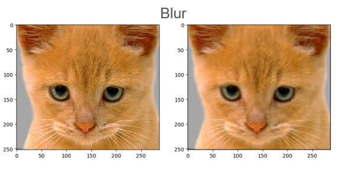 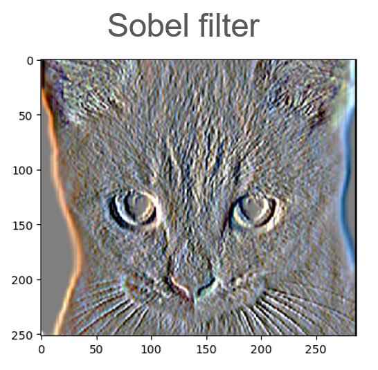 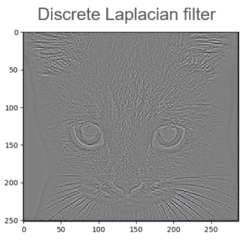
The low pass filter is used to filter low and high frequencies of two images and merge them seemlessly to create a mirage ie., hybrid images.
 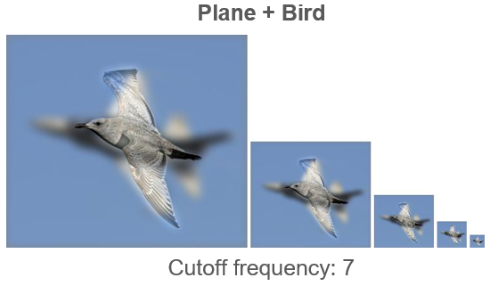
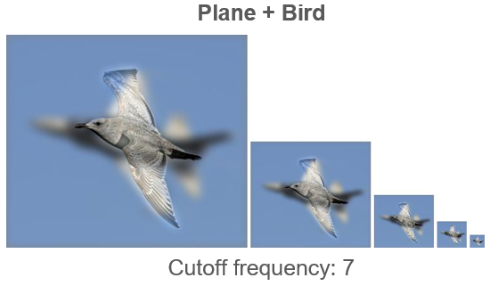
Finally, spatial and frequency domain methods of convolution are explored.
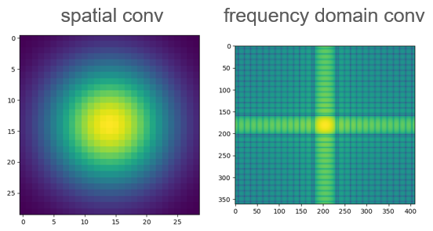
Libraries used: PyTorch, Numpy
Project 2 - Feature matching:
This project explored different steps of interest point detection (Harris corner detection), feature matching (SIFT feature descriptor)
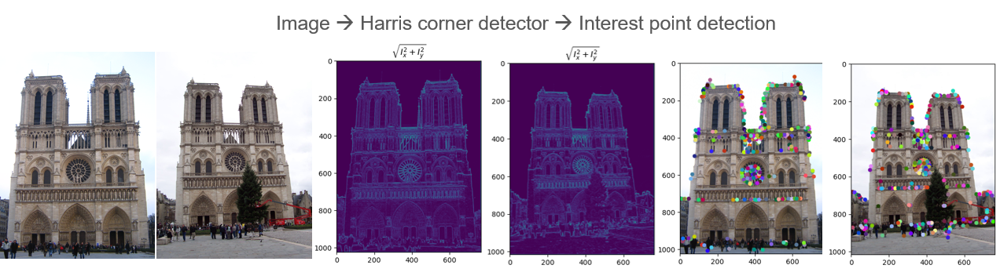
Project 3 - Random Sample Consensus (RANSAC) algoirthm:
This project explored scene tracking methods with RANSAC algoirthm using 2D, 3D projection and epipolar lines.
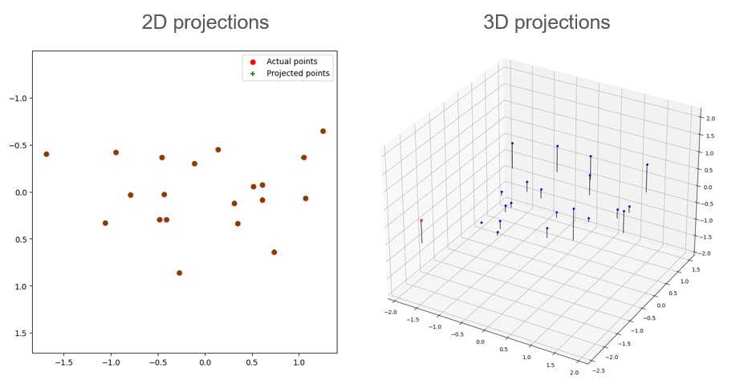 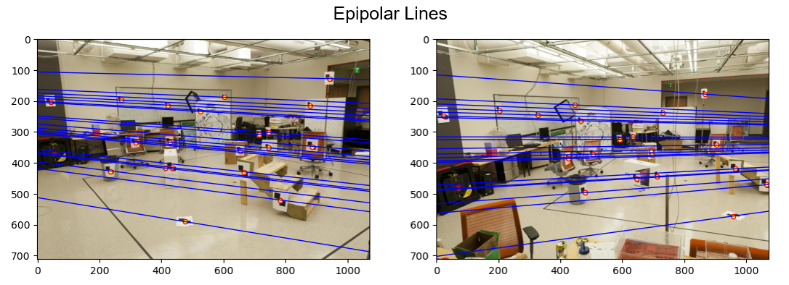
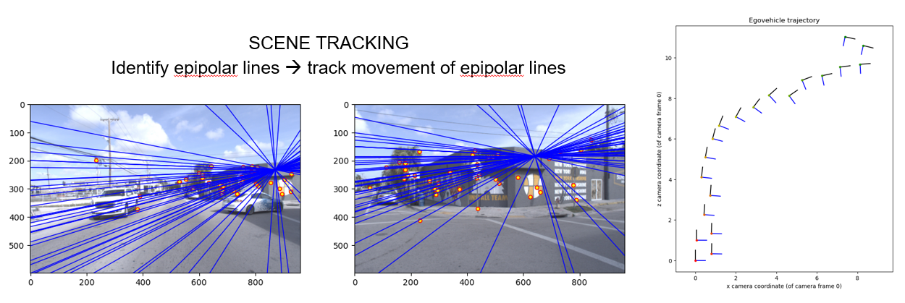
Project 4 - Convolution Neural Network (CNN):
This project explored building a ResNet model to label scene attributes and using transfer learning to improve the model.
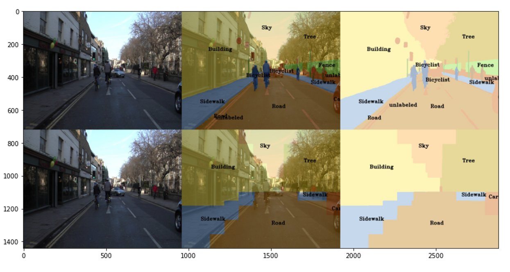